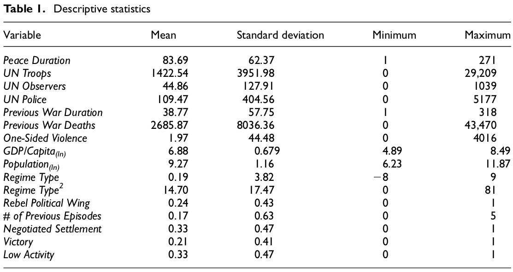
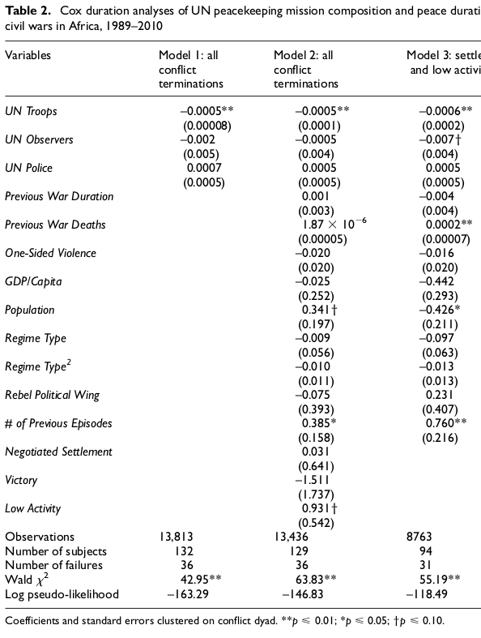

Hultman, Kathman & Shannon (2016). United Nations Peacekeeping Dynamics and the Duration of Post-Civil Conflict Peace.
Justin Leinaweaver (Fall 2026)
Diagram the Model
Who are the key Interests?
What are the key Institutions?
What are the key Interactions?
Interests
Institutions
Interactions
UN peacekeeping troops prolong peace
UN observers / police do not
Are we convinced by the conclusions?
UN peacekeeping troops prolong peace
UN observers / police do not
Evaluate the Case Selection
What cases in the world are they analyzing?
Are we confident these are the “right” cases for answering this research question? Why or why not?
Are we convinced by the conclusions?
UN peacekeeping troops prolong peace
UN observers / police do not

Are we convinced by the conclusions?
UN peacekeeping troops prolong peace
UN observers / police do not
Analyses
High, Low or No Confidence?

UN peacekeeping troops prolong peace
UN observers / police do not
Review your notes for all of the models we’ve explored in class